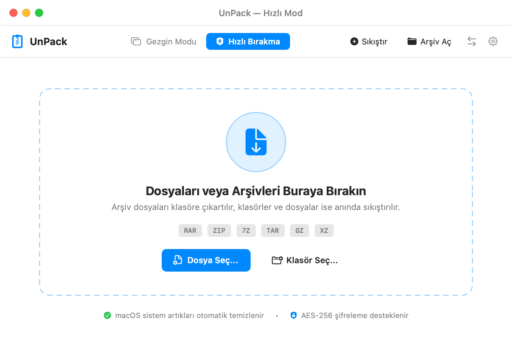
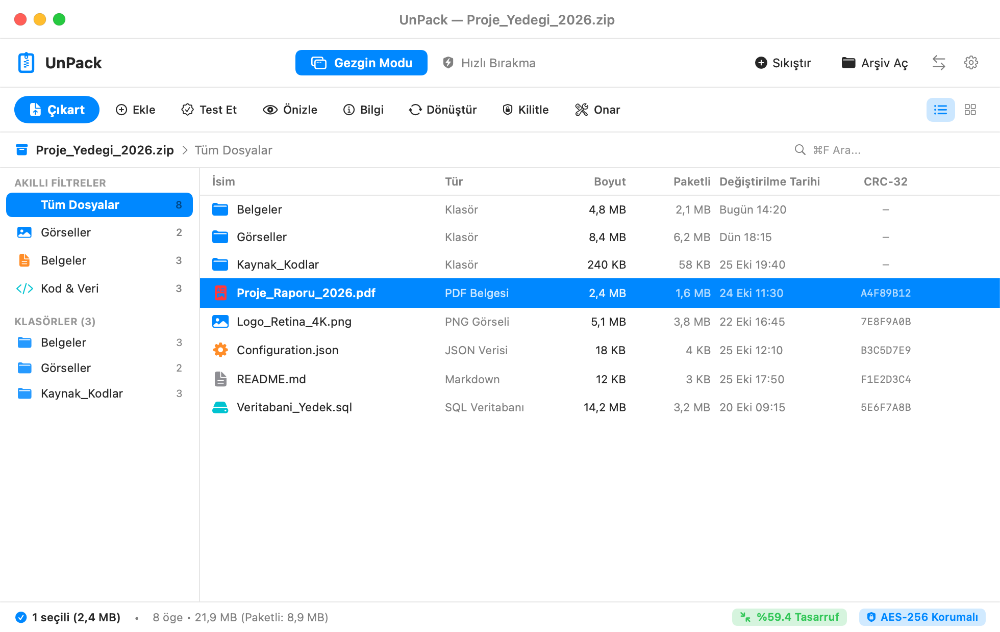
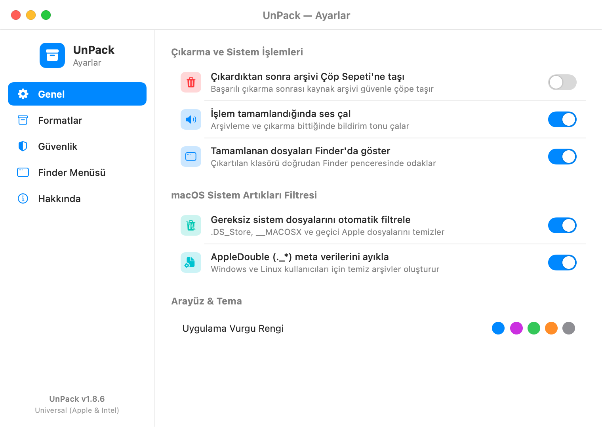
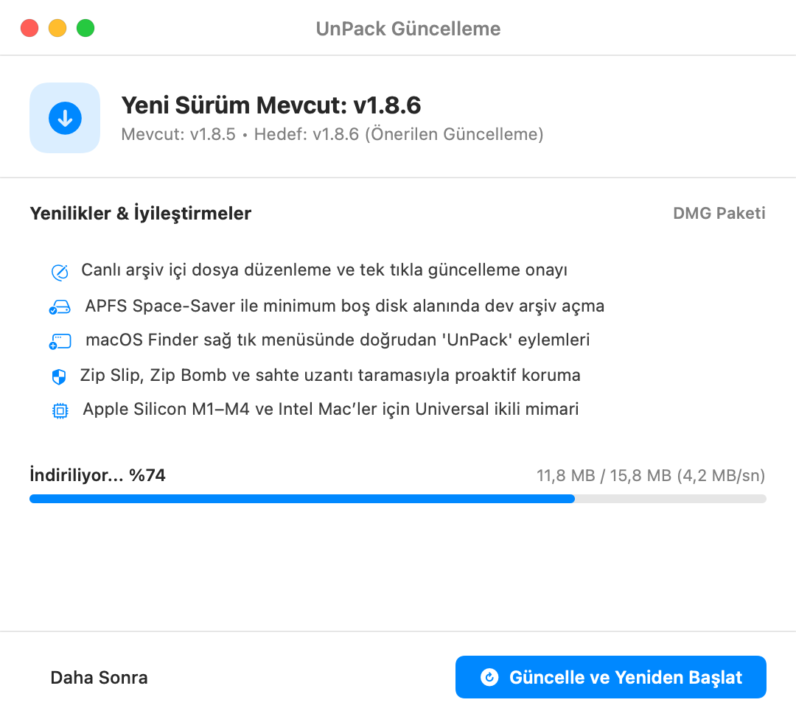

Çıkarmadan gezin, dağıtmadan açın.
Quick Look önizleme, APFS alan açma ve kesintisiz devam.
xattr -cr /Applications/UnPack.app

UnPack Arşiv Gezgini: 15,8 MB DMG, Sonoma ve Sequoia Universal.
Gezgin, QuickDrop ve Canlı Güncelleyici.
Sürükle bırakla açın, artıkları eleyin ve doğrudan güncelleyin.


macOS Arşiv İzlencesi yerine APFS ve günlük motoru.
Disk hesabı, dağılma önleme ve güvenlik taraması eşleştirmesi.
macOS Arşiv İzlencesi
UnPack
50 GB + 50 GB = 100 GB
Arşiv bitene dek iki kat boş alan gerekir
fcntl(F_PUNCHHOLE)
Çıkan bloklar APFS’e iade edilir (~500 MB yeterli)
84 dosya Masaüstüne yayılır
Köksüz arşivler mevcut dizini karıştırır
~/Desktop/Proje_2026/
Dağılma Koruması tek düzenli klasör açar
Kesintide bozuk çıktı kalır
Hata sonrası aktarım sıfırdan başlar
.unpack-journal.json
Yarıda kalan işlem kaldığı bloktan sürer
../../.ssh/authorized_keys
Üst dizine taşan yollar denetlenmez
CRC32 / SHA-256
Zip Slip ve Zip Bomb çıkma öncesi engellenir
.DS_Store, ._*
macOS kaynak çatalları pakete sızar
__MACOSX/*
Temiz ve çapraz platform arşiv üretir
Kapalı ikili ve ağ çağrıları
Arka planda izleme ve sunucu bağlantısı
AES-256 / MIT
Çevrimdışı çalışma ve açık kaynak kodu
RAR5, 7Z ve Zstd tek motorda.
Çok parçalı RAR5 ciltlerinden .tar.zst paketlerine on bir yerel biçim.
| Biçim | Destek | Motor | Kullanım |
|---|---|---|---|
| .zip, .zipx, .cbz | Okuma, Çıkartma, Oluşturma | Deflate ve AES-256 | Apple ve evrensel standart |
| .rar, .rev, .r00, .cbr | Okuma, Çıkartma, Oluşturma | RAR5 ve .part1 cilt | Resmi macOS unrar ve rar ikilisi |
| .7z, .cb7 | Okuma, Çıkartma, Oluşturma | LZMA2 katı blok | Katı bloklu yüksek sıkıştırma |
| .tar, .tgz, .txz, .zst | Okuma, Çıkartma, Oluşturma | Zstd, XZ ve Bzip2 | Unix ve geliştirici paketi |
| .iso, .dmg, .cab | Okuma ve Çıkartma | Salt okunur kalıp | Disk ve sistem kalıpları |
Hızlı_Kurulum, Finder menüsü ve kısayollar.
Gatekeeper engelini aşın, sağ tık menüsü ve kısayollarla hızlanın.
Hızlı_Kurulum ile Gatekeeper aşımı
DMG içindeki Hızlı_Kurulum.command betiğini çalıştırın veya Sistem Ayarları altından “Yine de Aç” iznini verin; Terminal için üstteki komutu kopyalayın.
Finder menüsü ve klavye kısayolları
Finder sağ tıkla “Buraya Çıkart” ve “Klasöre Çıkart” açılır; pencere içinde Space Quick Look, ⌘E çıkartma, ⌘T test ve ⌘I bilgi verir.
Sistem ve mimari
macOS 14 Sonoma ve 15 Sequoia; Apple Silicon (M1, M2, M3, M4) ve Intel x86_64 15,8 MB Universal paket.
Doğrudan DMG İndirme
MIT lisanslı, çevrimdışı Swift arşiv yöneticisi.